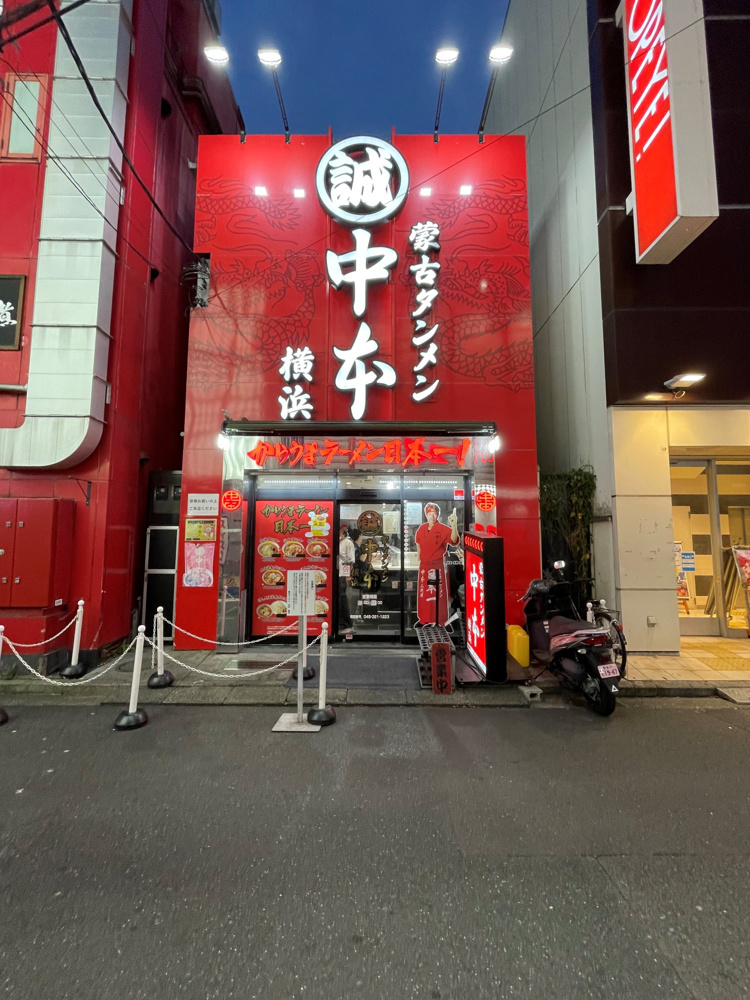

蒙古タンメン中本 横浜西口店

撮影者:ユン坊
撮影日:2023/10/3
真っ赤な看板と白に光る文字が印象的な横浜西口にある蒙古タンメン中本。様々なお店が並ぶ西口でもひと際存在感を放っています。
他にはないビル全体を看板としている珍しいデザインであり、目にも止まりやすいと感じました。
国立競技場までの道案内板
撮影者:ユン坊
撮影日:2019/12/20
最高裁判所の近くにあった看板で、「国立劇場」という単語に惹かれて写真を取ったものです。
看板には文字だけではなく国立劇場の紋章と行き先に向けた赤いユニークな矢印が青の文字とコントラストで、遠目で見ても行き先が分かりやすくなっています。
銀座和館 椿屋珈琲
撮影者:ユン坊
撮影日:2023/9/3
たまプラーザ駅にある東急百貨店２ｆにある喫茶店。大人の女性に向けた多くのアパレルショップがある中で佇んでいるお店で、あまり主張しすぎない看板になっている。
看板として主客を狙っているような見た目ではなく、あくまで百貨店にある休息場所のような感覚で利用している人が多いと感じた。